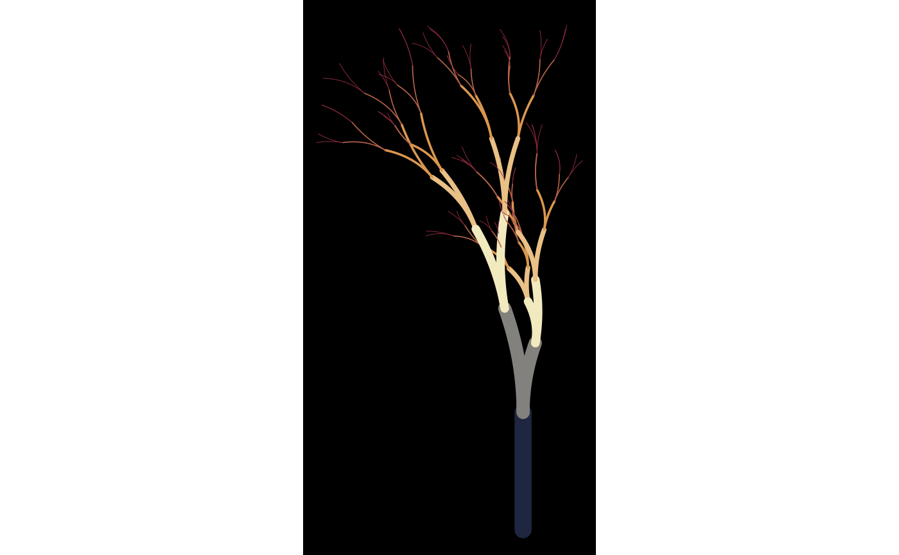

Create a plot from a flametree data frame
flametree_plot( tree, background = "antiquewhite4", palette = "viridis::inferno" )
| tree | The data frame specifying the flametree |
|---|---|
| background | The background colour of the image |
| palette | A palette specification used by the paletteer package |
The output is ggplot2 object plots the coord_x and coord_y values that define each segment as a bezier curve. To map each segment to its own curve, the group aesthetic is id_path, and the geom is the geom_bezier2() function in the ggforce package. The color aesthetic is mapped to seg_col, and the size aesthetic is mapped to seg_wid.
The background colour can be set using the "backgroud" argument, and the palette used to colour the segments is generated using the scale_color_paletteer_c() function from the paletteer package. To select the palette, the "palette" argument must take the form of a palette specification understood by paletteer.
flametree_plot(dat, background = "black")